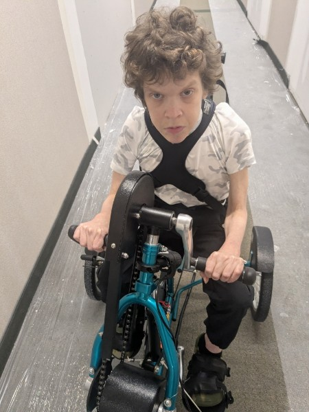

Age 32

Cerebral palsy
Dylan needs a supported adaptive trike so he can build strength and move on his own terms, something a standard bike can't give him. His PT has already matched him to the right ride. Now it's a question of funding.
Waiting to roll
Sponsor Dylan